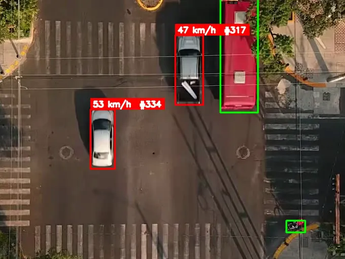
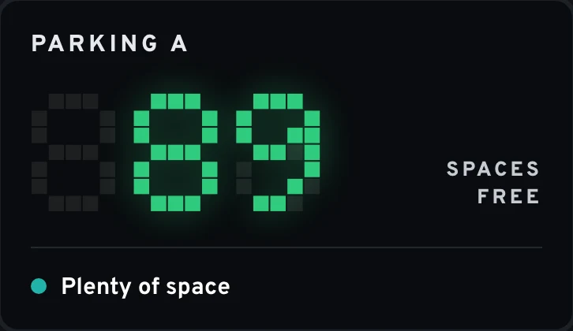
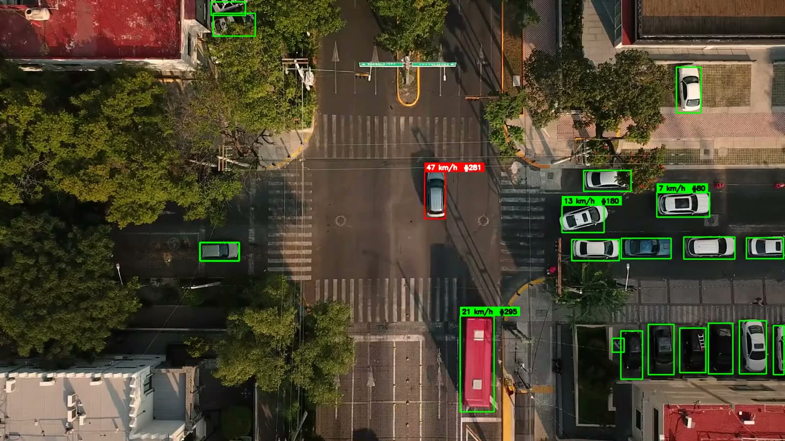
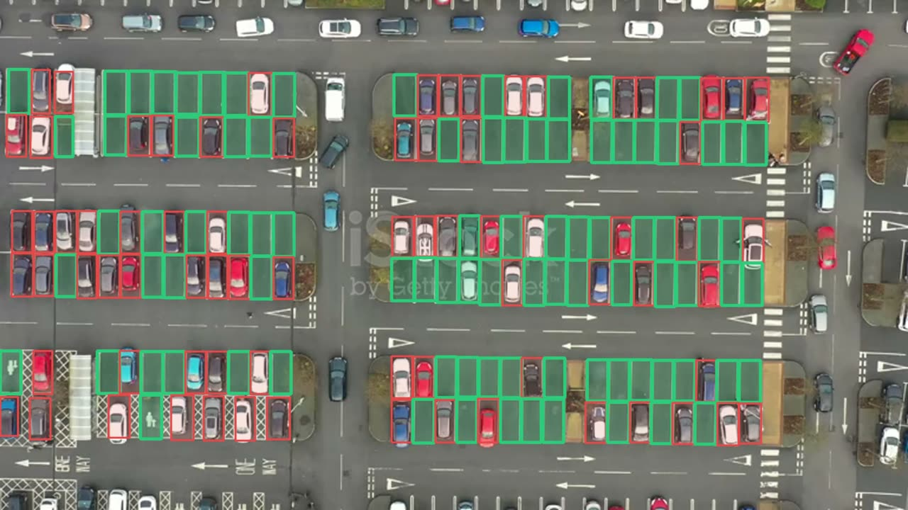

No plates from the air.
The drone measures speed and counts cars. It never reads number plates.
VIGIL
Smart gates, a drone overhead and parking that counts itself.
Same street. Now every car has a speed.
Three live consoles, one tap away.
Smart gate. Every car signs in and out with a card.

Speed watch. A drone reads the speed of every car below it.
Live parking. Every bay, marked free or taken as it happens.
Campus Parking. Check for a space before you set off.


Guard Alert. The nearest guard hears about speeding first.


Smart gate
Every registered car carries two cards, one for coming in and one for going out. Hold one to the reader and the visit shows up in the security office’s log a moment later, with the time and direction.
Tap. Hold the card to the reader for a moment.
Send. The gate radios the scan to the security office. No Wi‑Fi needed.
Logged. It appears on the gate log, usually within a second.
0.6 stypical time from tap to the gate log
Encryptedevery scan the gate sends
0 lostscans through a two‑minute network outage
No card? The guard counts visitors with two spare cards, one tapped for each car coming in and one for each going out.
Speed watch
A drone hovers over the road and reads the speed of every car beneath it. When a car stays over the 40 km/h limit, VIGIL saves a photo and tells the nearest guard.
under 30 km/h 30 to 40 km/h over 40 km/h


0.6 km/htypical difference between shaky and steady footage of the same cars
0.23 stypical time for an alert to reach a guard’s phone
0.7 sa car must stay over the limit this long before it counts
Live parking
A camera above the lot watches every bay. Free bays show green, taken ones red, and the count at the entrance changes within seconds of a car leaving.
free taken

The same count drivers see at the gate: how many spaces are free, and how busy the lot is, from “Wide open” to “Full”.
165bays watched in Parking A
20 sat most between updates, and sooner whenever a bay changes
2 minwithout fresh pictures, the board says “No live data”
Drivers find a space before they leave. Guards hear about speeding in under a second.
See how full each lot is, from “Wide open” to “Full”, then open a live map of every free bay.
When a car is speeding, the three nearest guards on duty get an alert with the place, the speed and a photo. The first to accept takes it, and the others see who’s on it.
Five parts, working as one.


Each part runs on its own, and they share a single, secure record.
The drone measures speed and counts cars. It never reads number plates.
The gate log knows which car came in. The drone only sees cars, not whose they are. The two are never joined.
Only accounts with a thapar.edu address can be guards and receive alerts.